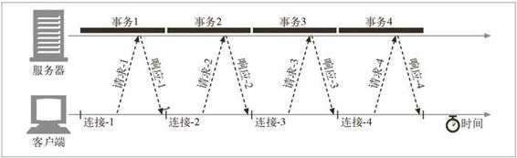

4.3 HTTP 连接的处理
本章的前两节对 TCP 连接及其性能含义进行了精要的介绍。要想学习更多与 TCP 联网有关的知识，请参见本章末尾的资源列表。
现在我们切回到 HTTP 上来。本章其余部分将解释操作和优化连接的 HTTP 技术。我们从 HTTP 的 Connection 首部开始介绍，这是 HTTP 连接管理中一个很容易被误解，但又很重要的部分。然后会介绍一些 HTTP 连接优化技术。
4.3.1 常被误解的Connection首部
HTTP 允许在客户端和最终的源端服务器之间存在一串 HTTP 中间实体（代理、高速缓存等）。可以从客户端开始，逐跳地将 HTTP 报文经过这些中间设备，转发到源端服务器上去（或者进行反向传输）。
在某些情况下，两个相邻的 HTTP 应用程序会为它们共享的连接应用一组选项。HTTP 的 Connection 首部字段中有一个由逗号分隔的连接标签列表，这些标签为此连接指定了一些不会传播到其他连接中去的选项。比如，可以用 Connection:close 来说明发送完下一条报文之后必须关闭的连接。
Connection 首部可以承载 3 种不同类型的标签，因此有时会很令人费解：
HTTP 首部字段名，列出了只与此连接有关的首部；
任意标签值，用于描述此连接的非标准选项；
值 close，说明操作完成之后需关闭这条持久连接。
如果连接标签中包含了一个 HTTP 首部字段的名称，那么这个首部字段就包含了与一些连接有关的信息，不能将其转发出去。在将报文转发出去之前，必须删除 Connection 首部列出的所有首部字段。由于 Connection 首部可以防止无意中对本地首部的转发，因此将逐跳首部名放入 Connection 首部被称为“对首部的保护”。图 4-9 显示了一个这样的例子。
图 4-9 Connection 首部允许发送端指定与连接有关的选项
HTTP 应用程序收到一条带有 Connection 首部的报文时，接收端会解析发送端请求的所有选项，并将其应用。然后会在将此报文转发给下一跳地址之前，删除 Connection 首部以及 Connection 中列出的所有首部。而且，可能还会有少量没有作为 Connection 首部值列出，但一定不能被代理转发的逐跳首部。其中包括 Prxoy-Authenticate、Proxy-Connection、Transfer-Encoding 和 Upgrade。更多有关 Connection 首部的内容请参见附录 C。
4.3.2 串行事务处理时延
如果只对连接进行简单的管理，TCP 的性能时延可能会叠加起来。比如，假设有一个包含了 3 个嵌入图片的 Web 页面。浏览器需要发起 4 个 HTTP 事务来显示此页面： 1 个用于顶层的 HTML 页面，3 个用于嵌入的图片。如果每个事务都需要（串行地建立）一条新的连接，那么连接时延和慢启动时延就会叠加起来（参见图 4-10）。1
1 根据举此例的目的，假设所有对象的长度基本上都一样，并且是从同一台服务器发出的，而且 DNS 条目被缓存了，排除了 DNS 的查找时间。

图 4-10 4 个事务（串行）
除了串行加载引入的实际时延之外，加载一幅图片时，页面上其他地方都没有动静 也会让人觉得速度很慢。用户更希望能够同时加载多幅图片。2
2 即使同时加载多幅图片比一次加载一幅图片要慢，人们也会有同样的感觉！用户通常会认为多幅图片同时加载要快一些。
串行加载的另一个缺点是，有些浏览器在对象加载完毕之前无法获知对象的尺寸，而且它们可能需要尺寸信息来决定将对象放在屏幕的什么位置上，所以在加载了足够多的对象之前，无法在屏幕上显示任何内容。在这种情况下，可能浏览器串行装载对象的进度很正常，但用户面对的却是一个空白的屏幕，对装载的进度一无所知。3
3 HTML 的设计者可以在图片等嵌入式对象的 HTML 标签中显式地添加宽高属性，以消除这种“布局时延”。显式地提供了嵌入图片的宽度和高度，浏览器就可以在从服务器收到对象之前确定图形的布局了。
还有几种现存和新兴的方法可以提高 HTTP 的连接性能。后面几节讨论了四种此类技术。
并行连接
通过多条 TCP 连接发起并发的 HTTP 请求。
持久连接
重用 TCP 连接，以消除连接及关闭时延。
管道化连接
通过共享的 TCP 连接发起并发的 HTTP 请求。
复用的连接
交替传送请求和响应报文（实验阶段）。